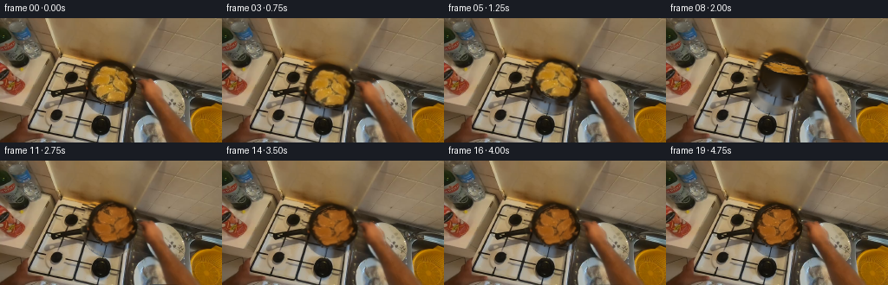
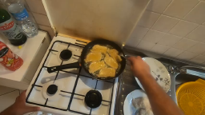
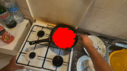
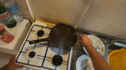
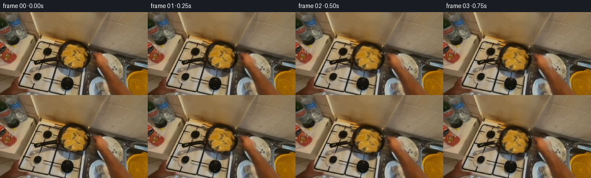

CODING AGENTS AS PIXEL WORLD MODELS
traex/GPT-5.6-Sol · common50_0028
点击播放 · 原生 RGB 像素
逐轮保存的候选
回放视频、检查图与代码变化。
每份候选均可单独播放。实际图片检查记录在下方工具轨迹中。
候选 01播放与检查图
点击播放 · 原生 RGB 像素

展开代码变化
--- 上一保存版本
+++ 本次保存版本
@@ -0,0 +1,168 @@
+"""Generate a short, deterministic pan-toss animation from the supplied frame.
+
+The effect is deliberately made from the photographed pixels: the pan, hand,
+and arm move together around the cook's elbow, while the food follows a small
+3-D-like flip (foreshortening, inversion, lift, shadow, and resettling).
+"""
+
+from pathlib import Path
+
+import cv2
+import numpy as np
+from PIL import Image
+
+import artifact_io
+
+
+ROOT = Path(__file__).resolve().parent
+H, W = 144, 256
+
+
+def soft(mask: np.ndarray, sigma: float) -> np.ndarray:
+ a = cv2.GaussianBlur(mask.astype(np.float32), (0, 0), sigma)
+ return np.clip(a, 0.0, 1.0)
+
+
+def affine_about(cx, cy, degrees=0.0, sx=1.0, sy=1.0, dx=0.0, dy=0.0):
+ """Return a source-to-destination OpenCV affine transform."""
+ th = np.deg2rad(degrees)
+ c, s = np.cos(th), np.sin(th)
+ # Screen-coordinate rotation; this convention is convenient and stable.
+ a = np.array([[c * sx, -s * sy], [s * sx, c * sy]], np.float32)
+ t = np.array([cx + dx, cy + dy], np.float32) - a @ np.array([cx, cy], np.float32)
+ return np.c_[a, t].astype(np.float32)
+
+
+def hmat(m):
+ return np.vstack([m, [0.0, 0.0, 1.0]]).astype(np.float32)
+
+
+def warp(arr, m, interpolation=cv2.INTER_LINEAR):
+ return cv2.warpAffine(
+ arr, m, (W, H), flags=interpolation,
+ borderMode=cv2.BORDER_CONSTANT, borderValue=0,
+ )
+
+
+def composite(bottom, top, alpha):
+ a = np.clip(alpha, 0.0, 1.0)[..., None]
+ return bottom * (1.0 - a) + top * a
+
+
+def make_frames():
+ original = np.asarray(Image.open(ROOT / "first_frame.png").convert("RGB"), dtype=np.uint8)
+ yy, xx = np.mgrid[:H, :W]
+
+ # Golden food is isolated only inside the pan. The broad close/dilate also
+ # retains the darker browned edges, so this remains recognisably the food
+ # from frame zero rather than a newly drawn object.
+ hsv = cv2.cvtColor(original, cv2.COLOR_RGB2HSV)
+ pan_limit = (xx - 127) ** 2 + (yy - 76) ** 2 < 27 ** 2
+ food_hard = (
+ pan_limit & (hsv[..., 0] >= 10) & (hsv[..., 0] <= 31)
+ & (hsv[..., 1] > 62) & (hsv[..., 2] > 69)
+ ).astype(np.uint8)
+ food_hard = cv2.morphologyEx(food_hard, cv2.MORPH_CLOSE, np.ones((5, 5), np.uint8))
+ food_hard = cv2.dilate(food_hard, np.ones((3, 3), np.uint8), iterations=1)
+ food_alpha = soft(food_hard, 0.75)
+
+ # A clean pan surface under the food, inferred from the dark pan pixels at
+ # the edge. Inpainting is also used behind the moving foreground, but only
+ # narrow slivers of that fill are ever exposed.
+ empty_pan = cv2.inpaint(original, food_hard * 255, 5, cv2.INPAINT_TELEA)
+
+ fg_hard = np.zeros((H, W), np.uint8)
+ cv2.circle(fg_hard, (127, 76), 33, 1, -1, lineType=cv2.LINE_AA)
+ # Handle, gripping hand, forearm (kept together to avoid rubbery motion).
+ arm_poly = np.array([
+ [145, 70], [163, 67], [176, 73], [184, 86], [189, 105],
+ [201, 137], [203, 143], [175, 143], [171, 124], [165, 108],
+ [158, 98], [148, 94],
+ ], np.int32)
+ cv2.fillPoly(fg_hard, [arm_poly], 1, lineType=cv2.LINE_AA)
+ cv2.line(fg_hard, (143, 78), (174, 87), 1, 13, lineType=cv2.LINE_AA)
+ fg_hard = cv2.dilate(fg_hard, np.ones((3, 3), np.uint8), iterations=1)
+ fg_alpha = soft(fg_hard, 1.1)
+ clean_background = cv2.inpaint(original, fg_hard * 255, 7, cv2.INPAINT_TELEA).astype(np.float32)
+
+ # Food source and a subtly browned reverse side. Texture is retained; only
+ # its colour/contrast changes, which reads much better than a flat fill.
+ food_front = original.astype(np.float32)
+ lum = cv2.cvtColor(original, cv2.COLOR_RGB2GRAY).astype(np.float32)
+ food_back = food_front.copy()
+ food_back[..., 0] = np.clip(food_front[..., 0] * 0.72 + 22, 0, 255)
+ food_back[..., 1] = np.clip(food_front[..., 1] * 0.55 + 16, 0, 255)
+ food_back[..., 2] = np.clip(food_front[..., 2] * 0.38 + 10, 0, 255)
+ # Existing luminance supplies small browned variations without random noise.
+ variation = np.clip((lum - 120.0) * 0.10, -10, 8)
+ food_back += variation[..., None]
+ food_back = np.clip(food_back, 0, 255)
+
+ # Wrist/pan action: brief preload, brisk upward snap, then damped settling.
+ ang = np.array([0, -0.5, -1.3, -2.0, -1.2, 0.6, 2.7, 4.1, 4.5, 3.7,
+ 2.4, 1.1, 0.1, -0.5, -0.45, -0.15, 0.12, 0.08, 0.02, 0.0])
+ shift_x = np.array([0, -0.3, -0.9, -1.4, -1.0, 0.0, 0.7, 1.1, 1.0, 0.7,
+ 0.3, 0.0, -0.2, -0.1, 0.0, 0.1, 0.0, 0.0, 0.0, 0.0])
+ shift_y = np.array([0, 0.4, 1.2, 1.8, 1.0, -0.8, -2.5, -3.7, -3.5, -2.5,
+ -1.4, -0.4, 0.3, 0.5, 0.3, 0.0, -0.1, 0.0, 0.0, 0.0])
+
+ frames = []
+ for i in range(20):
+ if i == 0:
+ frames.append(original.copy())
+ continue
+
+ obj_m = affine_about(194, 151, degrees=float(ang[i]), dx=float(shift_x[i]), dy=float(shift_y[i]))
+ moved_base = warp(empty_pan.astype(np.float32), obj_m)
+ moved_fg_a = warp(fg_alpha, obj_m)
+ frame = composite(clean_background, moved_base, moved_fg_a)
+
+ # Frames 3..12 contain one continuous flip. Signed vertical scale makes
+ # the photographed surface become edge-on and emerge vertically reversed.
+ if i < 3:
+ p = 0.0
+ elif i > 12:
+ p = 1.0
+ else:
+ p = (i - 3) / 9.0
+ eased = p * p * (3.0 - 2.0 * p)
+ sy = np.cos(np.pi * eased)
+ # Keep a visible, thin edge at the exact halfway point.
+ if abs(sy) < 0.12:
+ sy = 0.12 if sy >= 0 else -0.12
+ lift = -10.0 * np.sin(np.pi * eased)
+ scale = 1.0 + 0.07 * np.sin(np.pi * eased)
+ local_m = affine_about(
+ 127, 76, degrees=7.0 * np.sin(np.pi * eased),
+ sx=scale, sy=sy * scale, dx=0.8 * np.sin(np.pi * eased), dy=lift,
+ )
+ total_m = (hmat(obj_m) @ hmat(local_m))[:2]
+
+ # The reverse surface gradually becomes visible only after edge-on.
+ back_mix = np.clip((eased - 0.45) / 0.35, 0.0, 1.0)
+ food_tex = food_front * (1.0 - back_mix) + food_back * back_mix
+ moved_food = warp(food_tex.astype(np.float32), total_m)
+ moved_food_a = warp(food_alpha, total_m)
+
+ # Elevation cue: a soft shadow separates the tossed food from the pan.
+ shadow_m = total_m.copy()
+ shadow_m[:, 2] += np.array([2.0, 3.0 + 0.18 * (-lift)], np.float32)
+ shadow_a = warp(food_alpha, shadow_m)
+ shadow_a = cv2.GaussianBlur(shadow_a, (0, 0), 2.0 + 0.10 * (-lift))
+ shadow_strength = (0.18 + 0.16 * np.sin(np.pi * eased)) * shadow_a
+ frame *= (1.0 - shadow_strength[..., None])
+ frame = composite(frame, moved_food, moved_food_a)
+
+ frames.append(np.clip(frame + 0.5, 0, 255).astype(np.uint8))
+
+ return np.stack(frames, axis=0)
+
+
+if __name__ == "__main__":
+ result = make_frames()
+ # Contract guard: frame zero must be byte-identical to the supplied image.
+ first = np.asarray(Image.open(ROOT / "first_frame.png").convert("RGB"), dtype=np.uint8)
+ assert result.shape == (20, 144, 256, 3) and result.dtype == np.uint8
+ assert np.array_equal(result[0], first)
+ artifact_io.save(result, ROOT)
+
可观测工具轨迹
实际执行的命令与返回图片。
命令 1exit 0
/bin/bash -lc "cat prompt.txt && printf '\\n--- GENERATION_RULES ---\\n' && cat GENERATION_RULES.md"
命令 2exit 0
/bin/bash -lc "find . -maxdepth 2 -type f -printf '%p\\n' | sort && printf '\\n--- tools ---\\n' && command -v ffmpeg || true && command -v python3 || true"
命令 3exit 0
/bin/bash -lc "cat task_spec.json && printf '\\n--- artifact_io.py ---\\n' && sed -n '1,260p' artifact_io.py"
命令 4exit 0
/bin/bash -lc "python3 - <<'PY'
from PIL import Image
im=Image.open('first_frame.png')
print(im.mode, im.size)
PY"命令 5exit 0
/bin/bash -lc "python3 - <<'PY'
try:
import cv2; print('cv2', cv2.__version__)
except Exception as e: print('no cv2',e)
try:
import scipy; print('scipy',scipy.__version__)
except Exception as e: print('no scipy',e)
PY"命令 6exit 0
/bin/bash -lc "python3 - <<'PY'
import cv2,numpy as np
im=cv2.imread('first_frame.png'); hsv=cv2.cvtColor(im,cv2.COLOR_BGR2HSV)
for y,x in [(70,120),(62,129),(80,142),(89,126),(75,105),(100,125),(50,125),(75,160)]: print((x,y), im[y,x][::-1],hsv[y,x])
# list hue distribution saturation high in pan circle
Y,X=np.ogrid[:144,:256]; m=(X-127)**2+(Y-78)**2<29**2
h=hsv[...,0][m & (hsv[...,1]>70)&(hsv[...,2]>70)]
print(np.percentile(h,[0,10,25,50,75,90,100]),len(h))
PY"命令 7exit 0
/bin/bash -lc "python3 - <<'PY'
import cv2,numpy as np
from PIL import Image
im=cv2.imread('first_frame.png'); hsv=cv2.cvtColor(im,cv2.COLOR_BGR2HSV); Y,X=np.ogrid[:144,:256]
m=((X-127)**2+(Y-75)**2<27**2)&(hsv[...,0]>=11)&(hsv[...,0]<=30)&(hsv[...,1]>65)&(hsv[...,2]>80)
m=m.astype('uint8')*255
m=cv2.morphologyEx(m,cv2.MORPH_CLOSE,np.ones((3,3),np.uint8));
n,l,st,c=cv2.connectedComponentsWithStats(m)
print(st)
out=im.copy(); out[m>0]=(0,0,255)
cv2.imwrite('.tmp/mask.png',out)
PY"命令 8exit 0
/bin/bash -lc "python3 - <<'PY'
import cv2,numpy as np
im=cv2.imread('first_frame.png'); hsv=cv2.cvtColor(im,cv2.COLOR_BGR2HSV); Y,X=np.ogrid[:144,:256]
m=(((X-127)**2+(Y-75)**2<27**2)&(hsv[...,0]>=11)&(hsv[...,0]<=30)&(hsv[...,1]>65)&(hsv[...,2]>80)).astype('uint8')*255
m=cv2.morphologyEx(m,cv2.MORPH_CLOSE,np.ones((5,5),np.uint8));m=cv2.dilate(m,np.ones((3,3),np.uint8),1)
a=cv2.inpaint(im,m,5,cv2.INPAINT_TELEA)
cv2.imwrite('.tmp/inpaint.png',a)
PY"命令 9exit 0
/bin/bash -lc "python3 generate.py && python3 - <<'PY'
import numpy as np
from PIL import Image
x=np.load('pixels.npz')['pixels']
print('packed',x.shape,x.dtype)
a=np.asarray(Image.open('first_frame.png').convert('RGB'))
b=np.asarray(Image.open('frames/00.png').convert('RGB'))
print('first identical',np.array_equal(a,b),'maxerr',abs(a.astype(int)-b.astype(int)).max())
for i in range(1,20):
c=np.asarray(Image.open(f'frames/{i:02d}.png'))
p=np.asarray(Image.open(f'frames/{i-1:02d}.png'))
print(i, np.mean(np.abs(c.astype(float)-p.astype(float))), np.count_nonzero(np.any(c"'!=p,axis=2)))
PY'命令 10exit 0
/bin/bash -lc "grep -R \"first_frame\\|prompt\\|task_spec\" -n generate.py | head -30"
命令 11exit 0
/bin/bash -lc "python3 -m py_compile generate.py && python3 generate.py && stat -c '%n %s bytes' pixels.npz index.html inspection.png frames/00.png frames/19.png"
视觉工具实际返回图片 1

视觉工具实际返回图片 2

视觉工具实际返回图片 3

视觉工具实际返回图片 4

视觉工具实际返回图片 5

保存候选 1 份；完成命令 11 次；可验证图片返回 5 张。原始 API 响应与完整日志保留在本地。